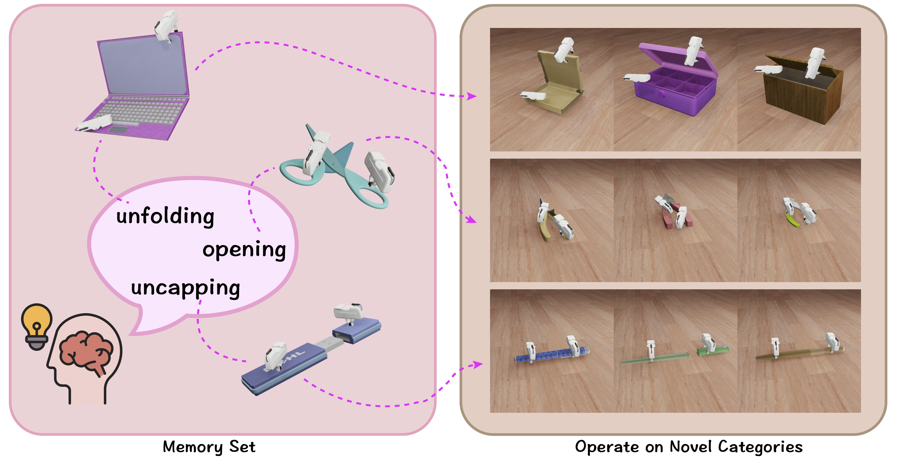

|
Jinxian Zhou | 周进贤 Hi👋, I am Jinxian Zhou, a senior undergraduate student in Shanghai Jiao Tong University(SJTU), majoring in Mechanical Engineering at Tsien Hsue-Shen Class. At SJTU, I have been an reserach intern of Machine Vision and Intelligence Group (MVIG), supervised by Prof.Cewu Lu and Prof.Lixin Yang. Currently, I'm fortunately to work with Prof.Lin Shao at National University of Singapore(NUS).
I'm looking for a Ph.D position starting from 2025 Fall.🙏 |
{kind=link}
🎉News
|
🎯ResearchI'm interested in robotics🤖 and computer vision 👀. |
|

|
Bi-Adapt: Few-shot Bimanual Adaptaion for Novel Categories of 3D Objects
via Semantic Correspondence
Jinxian Zhou, Ruihai Wu, Xunzhe Zhou, Checheng Yu, Licheng Zhong, Lin Shao under review project page / arXiv / code We propose a foundation model for robots to leverage prior knowledge for adaptively exploring unseen scenarios, thereby enhancing the generalization of interactions across categories in complex bi-manual manipulation tasks. |
🚀Experience
2024.06 - present

SJTU Machine Vision and Intelligence Group (MVIG), China Research Intern Research Advisor: Prof. Cewu Lu 2023.12 - present
Shanghai Jiaotong University(SJTU), China B.E. in Mechanical Engineering at Tsien Hsue-Shen Class Zhiyuan Honors Program of Engineering 2021.09 - present
|
🏅Award
|
|
Website template taken from jonbarron. |